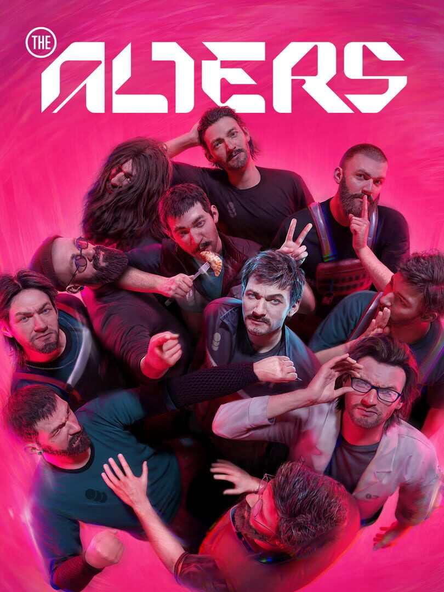

The Alters
The Alters
Details
|  | |
| Playtime | 15h 57m 0s |
| Last Activity | 2025-07-03 0:26:02 |
| Added | 2025-06-20 23:34:51 |
| Modified | 2025-06-20 23:34:57 |
| Completion Status | Played |
| Library | Steam |
| Source | Steam |
| Platform | PC (Windows) |
| Release Date | 2025-06-13 |
| Community Score | 72 |
| Critic Score | 88 |
| User Score | |
| Genre | Adventure Simulator |
| Developer | 11 bit studios |
| Publisher | 11 bit studios |
| Feature | Single Player |
| Links | Steam Official GOG Epic Twitch YouTube Discord Uknown Uknown Wikia |
| Tag | |
Description

The Alters is an ambitious sci-fi survival game with a unique twist. You play as Jan Dolski, the lone survivor of a crash-landed expedition on a hostile planet. To survive, you must form a new crew for your mobile base.
Using a substance called Rapidium, you create alternative versions of Jan - THE ALTERS - each one shaped by a different crucial decision from the protagonist’s past.

As you navigate through survival and moral dilemmas, you will explore a branching narrative filled with captivating character dynamics and challenging decisions.

At the same time, you’re challenged to reflect on one of life’s fundamental questions – do we shape our destiny or does it shape us? This makes your bid for survival a deeply personal experience.

Use the quantum computer onboard your base to simulate alternate outcomes of your past choices and uncover Jan’s different life paths. Each Alter brought to life thanks to the remarkable properties of Rapidium comes with unique skills and emotional depths. These variations offer both opportunities and challenges as you navigate personal struggles and manage the fragile dynamics of your crew.


To operate the mobile base, you’ll need to explore the planet’s surface in search of precious resources, like metals and organics. Yet venturing outside the safe haven comes with the risk of exposing you and your Alters to various deadly anomalies as well as the ever-present radiation of the sun. That’s why you must pay attention to the in-game day and night cycle and plan your daily activities wisely!


Navigate a narrative rich with moral dilemmas and branching paths. Your choices will shape Jan’s relations with his Alters which then will impact their journey and lead you to multiple outcomes and endings.


Gathered resources can be used in different ways – create necessary items or develop your base with additional modules like Research Lab or Social Room. Sometimes you will have to choose between creating items specially for your Alters and ones that could push the mission forward, like Anomaly Detectors or Radiation Filters. The burden of every decision lies solely on your shoulders as you will never be able to satisfy everyone’s needs.


The planet features unique biomes and secrets waiting to be found, but deadly anomalies stand in your way. Levitating rocks and eerie distortions of reality attract attention immediately, while other singularities remain invisible to the naked eye and require special tools to uncover. In all cases, you must be extra careful - or face the risk of instant death, radiation-induced injuries, and even disintegration of time and space. Also, you may want to avoid exploring the planet during hours when intense radioactivity can eat right through your suit. Happy travels!


Jan Dolski is about to face the answers to the essential “what if?” question in the form of alternative versions of himself. This makes the predicament he is in even more daunting as you slowly discover the impact every choice has on Jan’s survival.
The Alters poses you with life’s most nagging questions